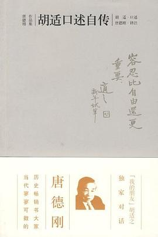

《胡适口述自传》

总体观点
自传记录了胡适从徽州乡村神童、留美学子成长为新文化运动领袖的思想蜕变史。“大胆假设、小心求证”的实验主义实证精神贯穿其毕生学问与人格求索。
文学革命不仅是一场文体改良，更是打破封建伦理蒙昧的现代思想启蒙。“白话文学”把语言的权利还给普通人民，使思想摆脱陈腐骈文的桎梏得以自由生长。
唐德刚开创性的宏富注释纠正了自述者的记忆偏差与隐恶扬善，使本书超越了普通个人传记，成为一部检视现代中国学术转型与社会政治激荡的立体史诗。
核心观点
-
1. “大胆假设，小心求证”是破除迷信权威的治学利刃
提出猜想要敢于打破常规，寻找证据时要像审判官般铁面客观，不容一丝主观武断附会。
胡适考据《水经注》案与《红楼梦》作者生平，翻烂清人笔记与宗谱孤本，以海量文献铁证一举终结附会索隐派胡猜。 -
2. 语言是思想的工具，死文字绝难产生活文学
文言文早已成为脱离日常生活的死僵标本，推广白话文是使现代科学与民主理念扎根大地的唯一桥梁。
胡适在美国留学期间撰写《文学改良刍议》，倡导“不做无病之呻吟、务去滥调套语”，亲手点燃新文化运动的燎原烈火。 -
3. “整理国故”旨在用现代科学手术刀重估传统价值
不是盲目崇古守旧，而是把孔孟老庄从神圣祭坛请回历史情境，让古老经典在理性审视下焕发新生。
胡适撰写《中国哲学史大纲》，打破两千年经学道统，以老子为起点进行平视逻辑剖析，震动整个民国学术界。 -
4. 容忍比自由还重要，是一切现代文明制度的基石
自居真理在手的人最容易压迫异己，成熟的政治与学术共同体必须保障少数派公开发声的权利。
胡适一生面对来自左右两翼政治狂潮的猛烈攻讦，始终坚持温和理性辩论，告诫国人“绝无他人不容怀疑之天理”。 -
5. 口述历史必须配备“挑刺判官”般的批判性注释
传记主人公难免自我美化与记忆遗忘，整理者以冷峻史料进行对质补正，才能成就有灵魂的信史。
唐德刚在书中写下数万字长篇译注，不仅补充了五四前后政治暗涌，还犀利指出胡适未能深刻洞察马克思主义历史唯物主义的局限。
全书结构
-
第一章：故乡和家庭
深情回顾安徽绩溪的童年生活、早逝的父亲与寡母严慈相济的家教对一生坚忍人格的奠基。
母亲每天清晨在床头低声叮嘱小胡适“好好读书做个好人”，慈母兼严父的教诲铸就其一生温润自律品格。 -
第二章：从拜神到无神
讲述少年时期阅读司马光《资治通鉴》与范缜《神灭论》，完成早期朴素无神论与怀疑精神的理性启蒙。
读到“形存则神存，形谢则神灭”时豁然贯通，断然拒绝向泥塑神像磕头，破除乡村鬼神迷信束缚。 -
第三章：在上海（一）
进入上海梅溪学堂与澄衷学堂求学，广泛接触新学译著，接受梁启超与严复进化论思想冲击。
因崇拜严复《天演论》中“物竞天择，适者生存”名言，将原名胡洪骍正式改为“胡适”，字“适之”。 -
第四章：在上海（二）
就读中国公学与参与《竞业旬报》编辑实践，在辛亥革命前夕的社会狂澜中初试白话政论身手。
年仅十七岁便以白话文撰写激进通俗的时事评论向大众布道，初露启蒙思想家文学革新的锐利锋芒。 -
第五章：我怎样到外国去
考取第二期庚子赔款官费留美生，从康奈尔大学农学院弃农从文转入哲学的关键人生抉择。
因无法忍受每天在苹果园辨识几十种苹果品种的枯燥功课，毅然遵从内心志趣转读文理学院攻读哲学。 -
第六章：青年期逐渐领悟的治学方法
在哥伦比亚大学受教于实用主义大师杜威，将赫胥黎怀疑论与清代朴学考据方法融会贯通。
确立“大胆的假设，小心的求证”八字箴言，将其发展为一生从事哲学史考订与国学研究的通用方法论。 -
第七章：文学革命的结胎时期
在留美中国同学圈发起诗歌革新大争鸣，撰写《文学改良刍议》，吹响新文化运动进军号角。
与任鸿隽、胡先骃就旧诗词用典展开旷日持久的书信论战，正式提出“不作无病之呻吟”等八项主张。 -
第八章：从文学革命到文艺复兴
回国应聘北京大学教授，主编《新青年》，以白话文推行文艺复兴并撼动中国数千年封建思想壁垒。
在北大红楼讲授中国哲学史，以简洁流畅的白话文替代佶屈聱牙的古文讲义，学生蜂拥而至挤满走廊。 -
第九章：“五四运动”一场不幸的政治干扰
反思五四学生爱国运动爆发始末，担忧激进政治狂热打断了从容深沉的文化与学术启蒙进程。
提出“多研究些问题，少谈些主义”，主张一点一滴改造社会，警惕抽象狂热的意识形态替代扎实启蒙。 -
第十章：从整理国故到研究和尚
运用现代文献学方法梳理诸子百家，赴英法调阅敦煌残卷，颠覆性重构中国禅宗史真相。
在大英博物馆与巴黎国家图书馆手抄敦煌密卷，考证出神会和尚在建立南宗慧能正统中的决定性历史功绩。 -
第十一章：从旧小说到新红学
扫荡旧红学猜谜索隐附会的荒诞流毒，奠定以曹雪芹家世版本为核心的现代实证新红学考证体系。
考订脂砚斋重评石头记各抄本流变，铁证前八十回为曹雪芹自传杰作、后四十回为高鹗续成，彻底重构红学航道。 -
第十二章：现代学术与个人收获
晚年纵论生平学术建树与时代遗憾，重申理性、法治、自由主义思想在中华文明演进中的长久价值。
总结一生虽在政治风暴中屡遭两岸毁誉，但坚信“争取个人的自由，便是争国家的自由；争自己的人格，便是争国家的人格”。